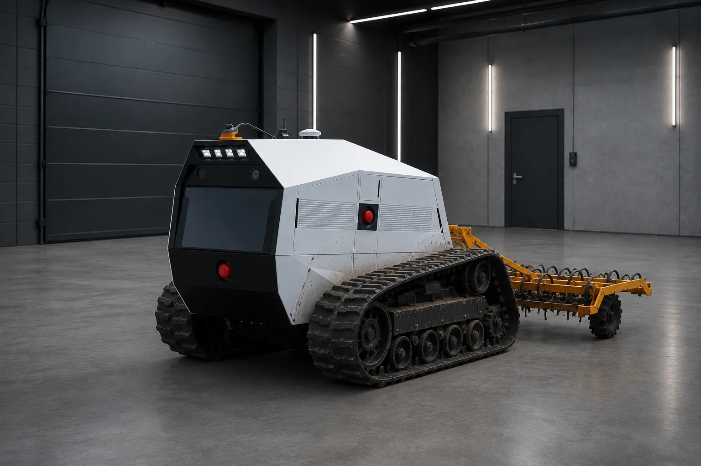
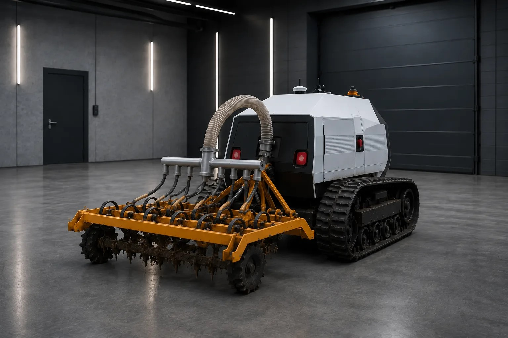

Гусеничная платформа на электротяге для крупных сельскохозяйственных работ. Управляется дистанционно — без тракториста в кабине.

Технические характеристики и результаты расчётов экономики.
Три модельные оценки, из которых складывается интерес проекта. Все допущения указаны рядом с цифрой.
Аккумуляторы питают электромоторы гусеничного хода и гидравлическую систему бороны. Гидравлика поднимает, опускает и удерживает нужную глубину обработки. Следом за бороной сопла высевающей системы засевают уже обработанную почву — обработка и посев происходят за один проход.

Для крупных сельскохозяйственных работ, требующих высокой производительности и минимума ручного труда.